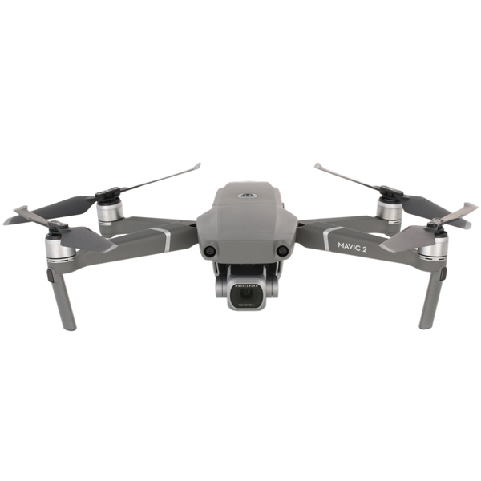

DJI Mavic 2 Pro
Описание товара
Мы всегда мечтали создать совершенный дрон. Инженерное чудо, идеальное для аэросъемки. Дрон, обладающий всеми лучшими технологиями DJI, дрон, который преобразит мир аэросъемки. Эта мечта исполнилась. Мы создали Mavic 2.
Характеристики товара
| Максимальная скорость | 72 км/ч |
| Дальность полета | до 18 км |
| Макс. высота полета над уровнем моря | до 6000 м |
| Поддержка Wi-Fi | Да |
| Трансляция видео через Wi-Fi | Да |
| Поддержка GPS | Да |
| Поддержка ГЛОНАСС | Да |
| Разрешение матрицы | 20 МПикс |
| Качество видеосъемки | Ultra HD (3840x2160 Пикс) |
| Скорость видеосъемки | 60 кадр/сек |
| Серийная съемка | 3 кадр/сек |
| Диапазон ISO | 100 - 12800 |
О товаре
С высоты птичьего полёта мир кажется совсем не таким, как с земли! Делайте потрясающие фото и видеоролики, от которых захватывает дух, при помощи квадрокоптера DJI Mavic 2 Pro.
СЪЁМКА НА «ПЯТЬ С ПЛЮСОМ»
Снимайте яркие, чёткие фотографии, которые соберут сотни лайков! Камера с разрешением 20 Мп умеет снимать видео в формате Ultra HD и фото, которые по качеству приближаются к профессиональным.
МЕНЬШЕ ТРЯСКИ
Стабилизаторы квадрокоптера отвечают за плавный и мягкий полёт. А это означает, что ваши ролики и фотографии потребуют намного меньше обработки!
БЫСТРЫЙ И МОЩНЫЙ
Квадрокоптер может развивать скорость до 72 км/ч! Только вдумайтесь: это быстрее, чем скорость езды по городу! При этом заряда аккумулятора хватит на 30 минут полёта.
ПРЯМАЯ ТРАНСЛЯЦИЯ
Впрочем, дожидаться возвращения дрона на базу вовсе необязательно. С технологией OcuSync 2.0 он может передавать видео в разрешении до 1080 пикселей на расстояние в 8 км!